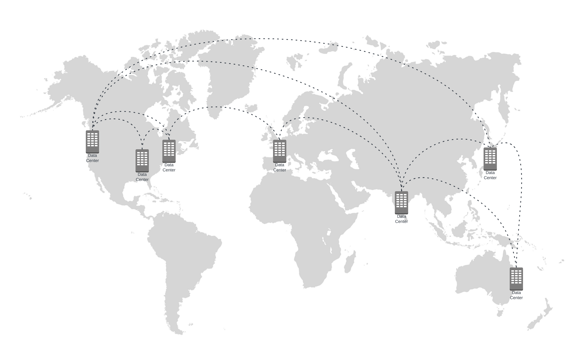
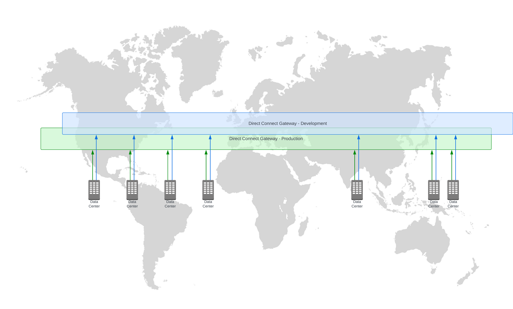

Bởi Alexandra Huides và Corey Harris Jr – ngày 09 tháng 5 năm 2025, trong chuyên mục AWS Direct Connect SiteLink.
Salesforce Business Technology đã sử dụng AWS Direct Connect SiteLink để xây dựng kiến trúc mạng lai toàn cầu, đảm bảo kết nối linh hoạt, hiệu suất cao và đáng tin cậy.
Giải pháp này giúp Salesforce mở rộng hạ tầng, giảm chi phí vận hành và tăng tốc độ đổi mới trong hành trình hiện đại hóa lên đám mây AWS.
Bài viết được thực hiện với sự hợp tác của Georgi Stoev và Ravi Patel – các chuyên gia kỹ thuật cấp cao tại Salesforce.
Salesforce là đối tác chiến lược của AWS và là công ty hàng đầu thế giới về quản lý quan hệ khách hàng (CRM).
Nhóm Business Technology chịu trách nhiệm xây dựng và vận hành các ứng dụng doanh nghiệp, hỗ trợ các mảng như tài chính, trung tâm dữ liệu, bảo mật, kho dữ liệu, và các máy ảo của Salesforce.
Với quy mô toàn cầu, Salesforce cần một kiến trúc mạng:
Tuy nhiên, các giải pháp mạng truyền thống dựa trên internet không thể đáp ứng yêu cầu nghiêm ngặt này.
Đó là lý do AWS Direct Connect SiteLink được lựa chọn — cung cấp kết nối riêng tư, chuyên dụng, bỏ qua internet công cộng, giúp cải thiện bảo mật và độ trễ đáng kể.
Trước khi triển khai, nhóm kỹ thuật Salesforce đã nắm rõ các thành phần mạng AWS sau:
Các dịch vụ này là nền tảng cho kiến trúc mạng lai toàn cầu, cho phép kết nối riêng tư và độ trễ thấp giữa nhiều vị trí Direct Connect — mà không cần đi qua các vùng AWS trung gian.
AWS Direct Connect cung cấp kết nối mạng riêng giữa hạ tầng tại chỗ và AWS, giúp tối ưu hiệu năng, độ trễ và độ tin cậy.
SiteLink là một tính năng mở rộng của Direct Connect, cho phép kết nối trực tiếp giữa các mạng tại chỗ thông qua đường trục mạng toàn cầu của AWS, giúp:
Quy trình hoạt động:
Salesforce Business Technology quản lý 7 địa điểm chiến lược trên toàn cầu:
Mạng được xây dựng trên đường trục riêng MPLS kết hợp với AWS Regions, hỗ trợ các luồng dữ liệu phức tạp giữa trung tâm dữ liệu và môi trường đám mây.
Tuy nhiên, các thách thức nảy sinh gồm:

Hình 1. Một mẫu kết nối trung tâm dữ liệu riêng toàn cầu sử dụng các mạch riêng.
Để giải quyết vấn đề, Salesforce Business Technology đã hiện đại hóa hạ tầng mạng bằng cách triển khai SiteLink.
Mục tiêu chính:
Nhóm đã:

Hình 2. Mẫu triển khai SiteLink toàn cầu cho Sản xuất và Phát triển.
Giải pháp SiteLink mang lại nhiều lợi ích vượt trội cho Salesforce:
| Lợi ích | Mô tả |
|---|---|
| Đơn giản hóa quản lý mạng | Loại bỏ độ phức tạp của định tuyến MPLS Layer 3 VPN, vẫn duy trì khả năng tách biệt lưu lượng. |
| Cải thiện hiệu suất | Tăng ổn định, giảm độ trễ trung bình 15% trên toàn cầu. |
| Tối ưu hóa chi phí | Tận dụng kết nối hiện có, thanh toán theo mức sử dụng. |
| Bảo mật nâng cao | Áp dụng mã hóa MACSec lớp 2 trên toàn bộ kết nối Direct Connect. |
Ngoài ra, SiteLink giúp:
“Với SiteLink, Salesforce Business Technology đã hợp lý hóa các hoạt động mạng và đảm bảo khả năng phục hồi tối đa cho kết nối toàn cầu. Chúng tôi có thể thiết lập kết nối giữa 7 trung tâm dữ liệu chỉ trong vài phút và mở rộng sang thị trường mới trong vài ngày.”
— Ravi Patel, Giám đốc kỹ thuật cấp cao tại Salesforce.
Việc áp dụng AWS Direct Connect SiteLink đã giúp Salesforce:
Để tìm hiểu thêm về AWS Direct Connect SiteLink, bạn có thể tham khảo tài liệu chính thức hoặc đặt câu hỏi trên AWS re:Post.
Alexandra Huides
Kiến trúc sư giải pháp chuyên gia mạng tại AWS.
Tập trung vào kiến trúc mạng quy mô lớn, hỗ trợ khách hàng áp dụng IPv6 và xây dựng môi trường linh hoạt. Ngoài công việc, cô yêu thích chèo thuyền, du lịch và đọc sách.
Corey Harris Jr.
Kiến trúc sư giải pháp cấp cao tại AWS.
Là chuyên gia về mạng và serverless, giúp khách hàng tối ưu hệ thống AWS. Ngoài công việc, anh yêu thích game, du lịch và thời gian bên gia đình.
Georgi Stoev
Kiến trúc sư kỹ thuật cấp cao tại Salesforce.
Với hơn 20 năm kinh nghiệm trong lĩnh vực mạng, AI và bảo mật, anh đam mê công nghệ, nghiên cứu ong mật và khám phá thiên nhiên.
Ravi Patel
Giám đốc kỹ thuật cấp cao tại Salesforce.
Có hơn 15 năm kinh nghiệm xây dựng mạng linh hoạt và hiệu suất cao. Ngoài công việc, anh thích lướt sóng, leo núi, và phiêu lưu khám phá thế giới.